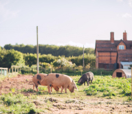

При организации практических полевых семинаров 7-ой «Пионер АгроАкадемии» компания Corteva Agriscience
стремилась реализовать концепцию непрерывного обучения для того, чтобы даже постоянные участники мероприятий
прошлых лет могли узнать для себя что-то новое в технологии возделывания таких культур как кукуруза и
подсолнечник.
Среди реализованных на полях «АгроАкадемии» опытов были представлены результаты 8 уникальных испытаний, в
том числе опытный участок «колесо стресса», демонстрирующий влияние норм высева на продуктивность гибридов.
Интерес посетителей также вызвала опытная локация «машина времени», которая воссоздает все ключевые этапы
вегетации культур, чтобы на реальных посевах обратить внимание агрономов на различные фазы физиологического
развития растений и влияния на них внешних факторов.

Организаторы продемонстрировали участникам «АгроАкадемии» результаты уникальных испытаний с нарушением
опыления кукурузы и влиянием града на посевы культуры в разной фазе вегетации. В рамках силосного блока
животноводы получили информацию об особенностях заготовки кукурузы на корм в разной уборочной спелости и
работу портативного анализатора кормов Aurora на образцах кукурузного силоса.
Также первый раз в России были представлены результаты использования семян, прошедших обработку
биологическим стимулятором роста LumiBio из эксклюзивной линейки средств защиты посевного материала Pioneer
– LumiGen. Данные подтвердили эффективность обработки в условиях российских полей – наблюдался прирост
вегетационной массы, более мощное развитие корневой системы (+15% к стандартной обработке), а также быстрое
раннее развитие и цветение.
Традиционно всеобщее внимание привлекли делянки, где наглядно демонстрировались наиболее распространение
ошибки аграриев – влияние некорректных норм высева, нарушение оптимальной скорости сева и его глубины на
последующие этапы вегетации кукурузы и подсолнечника и их продуктивность. В испытаниях этого года
закладывались опытные участки большей площади с помощью соответствующей сельхозтехники, что позволит
наиболее точно рассчитать потери урожая, вызванные отклонениями в параметрах сева.
Специалисты Corteva предоставили участникам мероприятия агрономическую поддержку для решения наиболее
актуальных проблем региона этого сезона, рассказав про технологии противостояния засухе, схемы борьбы с
фузариозом стебля и початка, а также контроля совки и кукурузного мотылька.
Всего же в рамках полевых семинаров Corteva Agriscience представила 20 гибридов кукурузы, 11 гибридов
подсолнечника, а также эффект от применения ряда гербицидов и фунгицидов для этих культур из портфеля
Corteva.